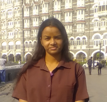

Isha Kumari
Ph.D. Research Scholar · Department of Economics · Shri Mata Vaishno Devi University, Katra, Jammu
I am a doctoral researcher in Economics with academic interests spanning macroeconomics, international finance, mathematics, statistics, and econometrics. Alongside my doctoral research, I have developed a diverse research portfolio through publications, book chapters, conference presentations, and collaborative research projects.
My broader scholarly work has explored healthcare expenditure, health outcomes, life expectancy, economic growth, poverty, human capital, environmental sustainability, gender inequality, and the Sustainable Development Goals across South Asian, Asian, and G20 economies. I have presented my research at national and international academic conferences, including the 60th Annual Conference of The Indian Econometrics Society, and have received recognition through awards for research and academic presentations.
My research is driven by an interest in understanding complex economic and financial relationships through rigorous empirical analysis. I aim to contribute meaningful evidence to contemporary academic debates and policy discussions while continuously developing interdisciplinary perspectives on evolving economic, financial, and societal challenges.
Beyond research, I have actively participated in academic coordination, volunteering, workshops, conferences, and professional development activities, strengthening my organisational, collaborative, and communication skills.

Curriculum Vitae
Academic Background and Research Experience
Publications & Presentations
Book Chapters
Conference Papers & Presentations
Awards & Achievements
Workshops & Conference Participation
- ICSSR-funded workshop, "Prospects of Micro-Irrigation under Pradhan Mantri Krishi Sinchan Yojana," SMVDU Katra, 6 Mar 2024.
- Hybrid workshop, "Entrepreneurship in the 21st Century," IETE with e-flip magazine — earned merit.
- VSM Workshop & Simulation Competition, 5paisa.com — Certificate of Recognition.
- Webinar, "Economy of Manipur," Foundation of Economic Growth and Welfare, 18 Jul 2025.
- Listener, First International Conference on Communication in Engineering, Science and Management (ICRCESM-2025), Ramchandra College of Engineering, Eluru, 30–31 May 2025.
- INET-YSI SDG Conference, IIT Jammu, SMVDU Katra, INET New York & YSI, 21–22 Mar 2025.
- Webinars, "Market Design for Doing Good" (2021) and "International Financial Market after Covid-19" (2022), FEGW.
- Session on "Patent Prosecution Challenges and Strategies in India," Frontier Legal & Turnip Innovations.
- CEO Dialogue Meet, "Investor Awareness and Financial Planning," Aditya Birla Sun Life AMC Ltd.
- Certificate of Appreciation for volunteering at ARTHA-2K20.
- International Seminar on Sustainability in Rural Development in India, NABARD.